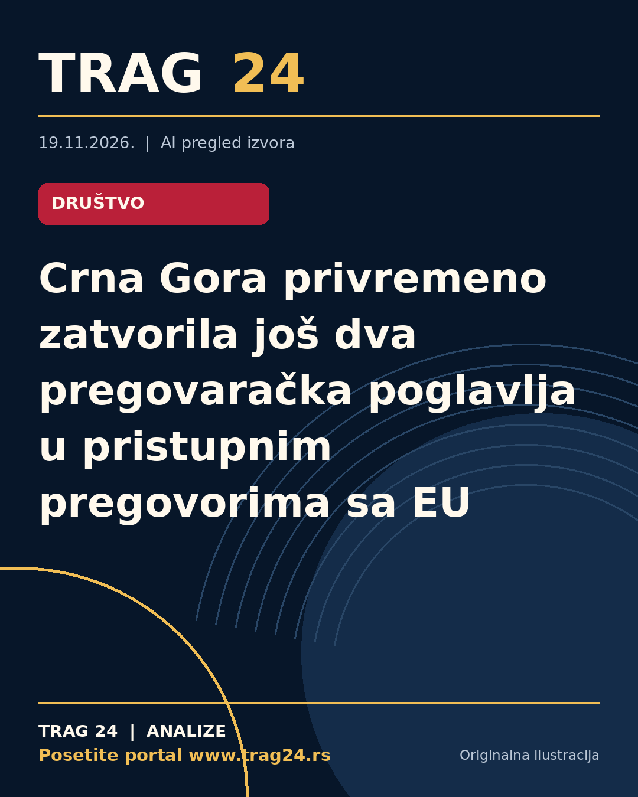

Crna Gora privremeno zatvorila još dva pregovaračka poglavlja u pristupnim pregovorima sa EU

ŠTA SE DOGODILO
Na Međuvladinoj konferenciji u Briselu Crna Gora je privremeno zatvorila još dva pregovaračka poglavlja sa Evropskom unijom, čime je broj zatvorenih poglavlja porastao na 25 od ukupno 33. Zatvorena su poglavlja 16 – Porezi i 22 – Regionalna politika i koordinacija strukturnih instrumenata.
HRONOLOGIJA
Do danas je Crna Gora od početka godine zatvorila ukupno 13 poglavlja, dok je u toku irskog predsedavanja Savetu EU zatvoreno devet poglavlja. Na prethodnoj konferenciji, održanoj 6. novembra, privremeno su zatvorena poglavlja 1 i 12. Crnogorska vlada planira da pregovore završi do kraja 2026. godine, sa ciljem da država postane članica EU 2028. godine.
ŠTA NAVODE IZVORI
Evropska komesarka za proširenje Marta Kos navodi da je Crna Gora na trećem mestu po broju poglavlja zatvorenih u jednoj godini, iza Litvanije i Letonije, i da postoji šansa da ih prestigne. Takođe ističe da je danas postignuto rezultat dugogodišnjeg rada i da je Crna Gora ispunila uslove za zatvaranje svih preostalih poglavlja do kraja godine. Državni ministar za evropske poslove Irske Tomas Birn ocenjuje da konferencija potvrđuje posvećenost proširenju EU i smatra da je cilj Crne Gore i dalje ostvariv. Ministarka evropskih poslova Crne Gore Maida Gorčević ističe da je privremeno zatvaranje poglavlja rezultat zasluga i reformi, kao i da će biti urađeno sve što Evropska komisija smatra potrebnim. Takođe, navodi da Crna Gora želi da reši bilateralna pitanja sa Hrvatskom pre ulaska u EU.
ŠTA JE POTVRĐENO
Potvrđeno je da su poglavlja 16 i 22 privremeno zatvorena, da je broj zatvorenih poglavlja porastao na 25, kao i da su Crna Gora i Evropska komisija postigli određene reforme uslovljene za zatvaranje poglavlja. Takođe, potvrđeno je da bilateralna pitanja sa Hrvatskom otežavaju proces zatvaranja preostalih poglavlja. Evropska komisija je utvrdila da su završna merila za zatvaranje pregovora ispunjena.
ŠTA NIJE POTVRĐENO
Nije potvrđeno da li će Crna Gora uspeti da do kraja godine zatvori sva preostala poglavlja, niti kakav tačno ishod bi mogao imati dijalog sa Hrvatskom u vezi sa bilateralnim pitanjima i potencijalnom arbitražom granice.
ŠTA OSTАJE OTVORENO: Ostaje otvoreno pitanje da li će Crna Gora uspeti da kompletira pristupne pregovore do kraja 2026. godine i kako će se rešavati sporna bilateralna pitanja sa Hrvatskom, koji su deo uslova za završetak pregovora. Takođe ostaje prostor za procenu brzine i dinamike daljih reformi i pregovora pod irskim predsedavanjem Savetu EU.
Izvori
- https://www.blic.rs/vesti/politika/crna-gora-zatvorila-jos-dva-poglavlja-u-pregovorima-sa-eu/ve0szs8
- https://nova.rs/vesti/svet/crna-gora-zatvorila-jos-dva-poglavlja-u-pregovorima-sa-eu/
- https://www.danas.rs/svet/crna-gora-zatvorila-jos-dva-poglavlja-eu/
Ova analiza je pripremljena uz pomoć veštačke inteligencije na osnovu javno dostupnih izvora. Navodi izvora nisu nužno nezavisno potvrđeni.